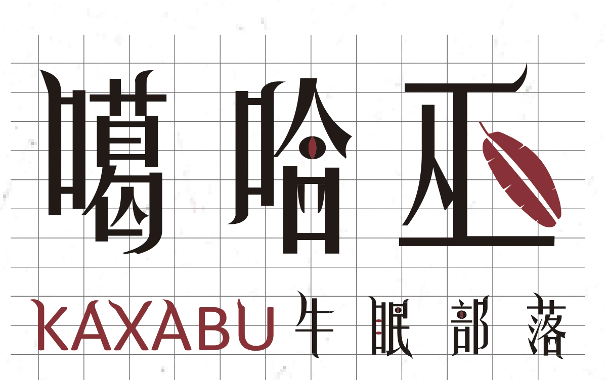
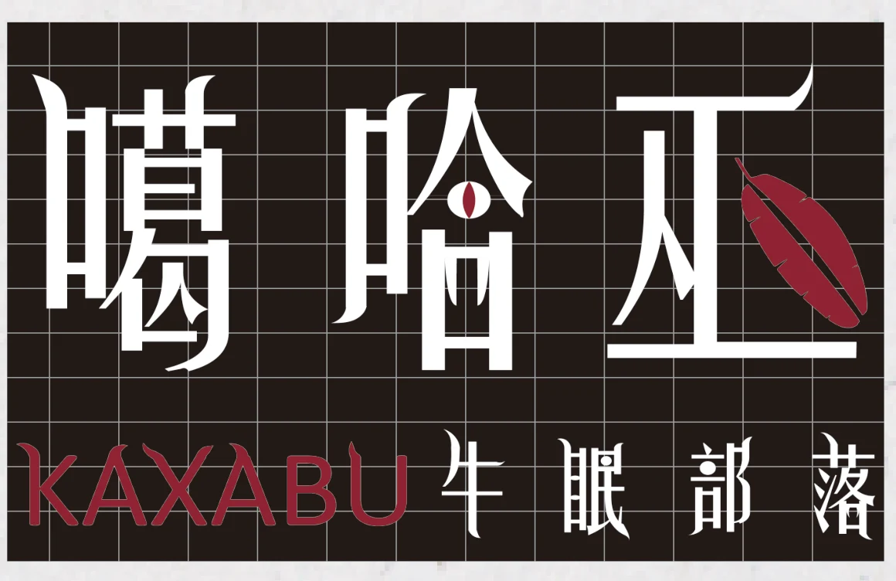
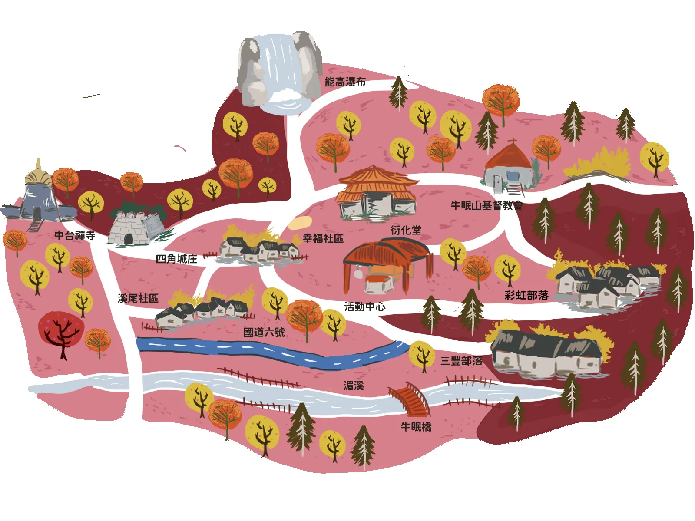
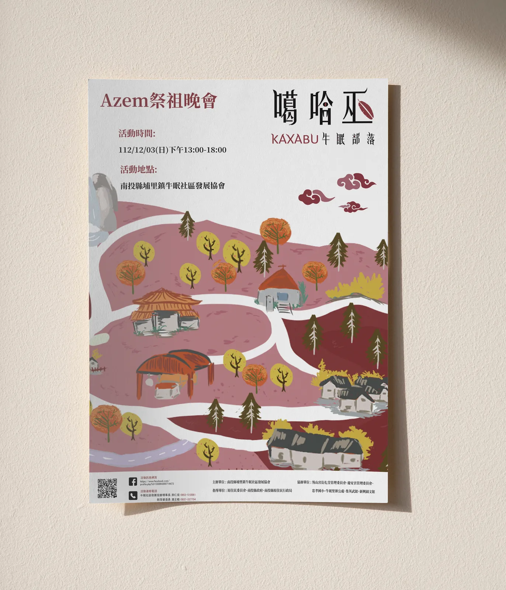
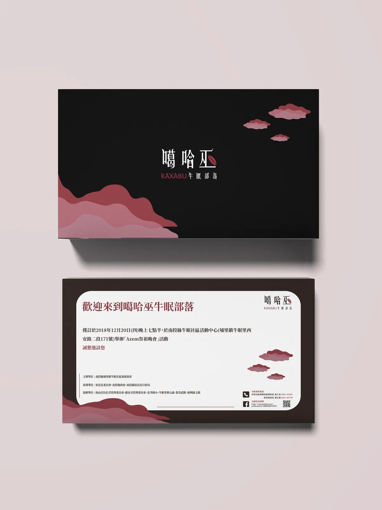
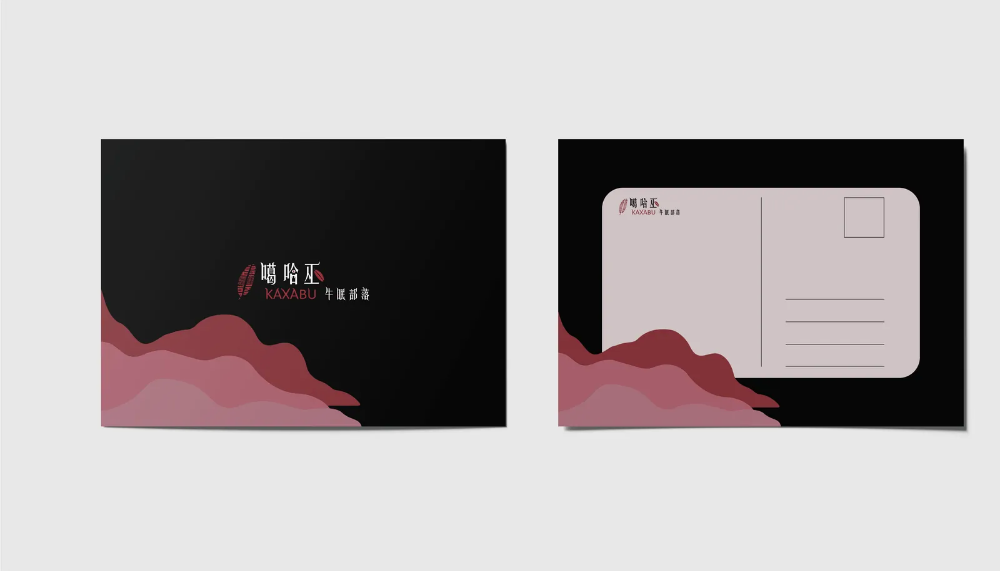
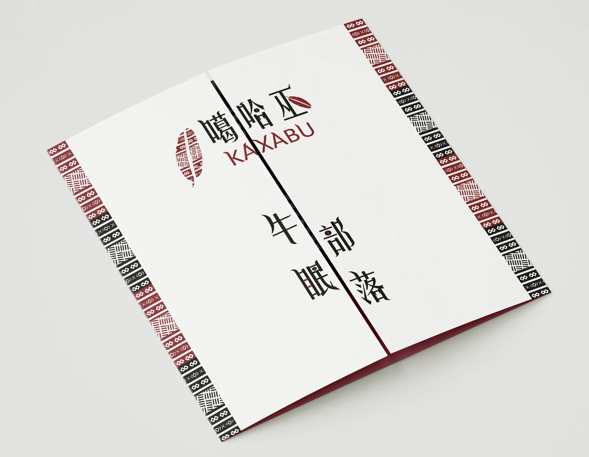

2023 · Visual · Brand
Kaxabu 噶哈巫 —— 牛眠部落識別
The Kaxabu are one of Taiwan’s plains indigenous peoples. This identity exists to get their culture seen — by the public and by the government — before it thins out and disappears. 利用這些設計去宣傳噶哈巫文化對台灣的重要性, 讓政府與人們看見他們的文化並推廣出去,避免沒落的風險。
- Type
- Visual design · Identity
- Year
- 2023
- Team
- Student project — 黃柏瑋
- Advisor
- 彭立勳
- Deliverables
- Wordmark, illustrated tribe map, poster, invitation, postcard & DM

01
Wordmark 標準字
Red and black come from the tribe’s weaving. The letterforms take their spikes from the Fanpo ghost of Kaxabu legend — banana leaves, cat eyes — so the type carries the shaman’s side of the story. 搭配圖騰紅黑的特色與部落傳說中蕃婆鬼的特徵,例如芭蕉葉、貓眼等特色, 再配上有尖角的字型襯托出巫師的神秘與邪惡氛圍。

- #872F36
- #231815
02
Map 部落電繪地圖

03
Print 平面應用



